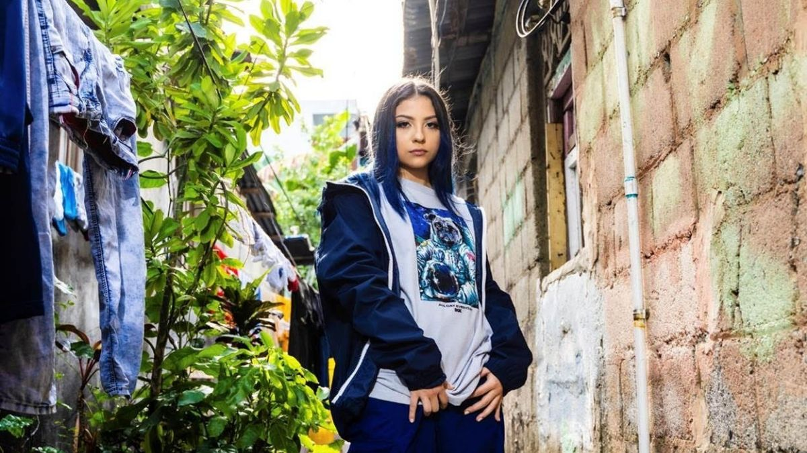
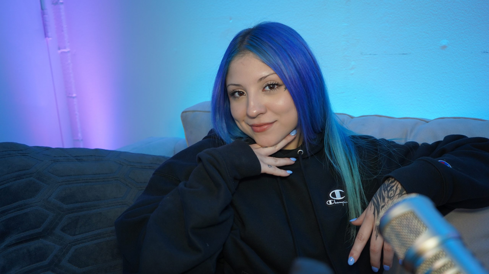

La vida de Fufu
Fufu, la joven y talentosa artista tica que promete convertirse en una de las nuevas sensaciones del trap lanzó su single “Again II”. “Again II” habla de un corazón roto, una relación que terminó sin aparente explicación. A través de su lírica, Fufu expresa que, aunque el ego y el orgullo muchas veces pueden más y mantienen a dos personas separadas es necesario aceptar que aún hay sentimientos y saber cómo canalizarlos. Fufu, la joven y talentosa artista tica que promete convertirse en una de las nuevas sensaciones del trap lanzó su single “Again II”. “Again II” habla de un corazón roto, una relación que terminó sin aparente explicación. A través de su lírica, Fufu expresa que, aunque el ego y el orgullo muchas veces pueden más y mantienen a dos personas separadas es necesario aceptar que aún hay sentimientos y saber cómo canalizarlos.Fufu, la joven y talentosa artista tica que promete convertirse en una de las nuevas sensaciones del trap lanzó su single “Again II”. “Again II” habla de un corazón roto, una relación que terminó sin aparente explicación. A través de su lírica, Fufu expresa que, aunque el ego y el orgullo muchas veces pueden más y mantienen a dos personas separadas es necesario aceptar que aún hay sentimientos y saber cómo canalizarlos.Fufu, la joven y talentosa artista tica que promete convertirse en una de las nuevas sensaciones del trap lanzó su single “Again II”. “Again II” habla de un corazón roto, una relación que terminó sin aparente explicación. A través de su lírica, Fufu expresa que, aunque el ego y el orgullo muchas veces pueden más y mantienen a dos personas separadas es necesario aceptar que aún hay sentimientos y saber cómo canalizarlos.
“Again II” es el primer sencillo que Fufu lanza bajo Warner Music Latina y además es la continuación de uno “Again” tema lanzado durante el 2020.Su increíble talento para la composición improvisar y contar historias a través de su música, logro que esta joven artista de tan solo 17 años, recientemente se uniera a la familia de Warner Music Latina. Fufu nació en Lawrenceville, Atlanta Ga, su madre es costarricense y su padre mexicano y desde siempre ha sentido pasión por la música. La joven artista comenzó a escribir canciones cuando tan solo tenía 12 años, y a sus 14 descubrió que lo suyo era el trap.
Su intención al componer era dejar su país en alto y a principios de 2020 soltó un fragmento de una de sus canciones, "Dulce Salao", en Instagram donde menciona que es de Costa Rica lo cual llamó la atención del público costarricense y rápidamente empezó a sobresalir hasta llegar a convertirse en una de las artistas “Radar de Spotify” (octubre 2020). Para mayores detalles del sencillo puede ver el video adjunto.
Sobre su estilo musical, Fufu considera que hace “cosas raras”. Se refiere específicamente a que todavía está en la búsqueda de su identidad, pero en el proceso ha probado diferentes géneros y expresiones para lograrlo. Lo que ha alcanzado en ese camino son canciones que le han ido definiendo como artista. Sus creaciones musicales, incluso, han moldeado su propio ser, sobre todo desde que decidió hablar, públicamente, sobre su realidad como persona no binaria. “Creo que nací en la generación correcta, porque si hubiera nacido antes no hubiera aguantado. Hoy en día la gente muestra mucho apoyo, me agrada mucho. Me siento muy querido, no he tenido que lidiar con tanto odio. Personalmente y como artista es una liberación”, afirmó.